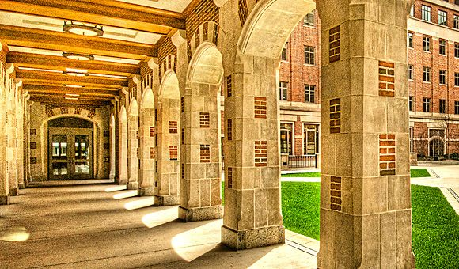
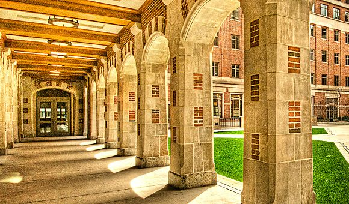

Portfolio Education
My education journey has started at Macomb Community College. I spent a year there and got all A's and was able to transfer to MSU. While at MSU I had the intention of pursuing a CS degree. I even took credits at Lansing Community College because they were not at MSU. I went to MSU becuase I did not think I can get into UofM. After I saw my academic success at MSU, I was encouraged to apply by friends. I finally felt ready to apply to my dream school UofM. The BSI degree really drew my attention and I was extremley excited when I got accepted. I am blessed with the the oppurtunities that I have had. Now in my senior year, I have enjoyed school so much that I have plans on pursuing a masters degree. The pandemic has taken away the true expierence of school. Remote learning is no where near as fun and I truly miss the organic aspect of an academic year. I feel that my senior year was taken away from me and this might be one of the reasons why I continue my education with a masters degree. Uofm has changed my life and I miss many of my friends and the atmosphere of a great educational enviornment.